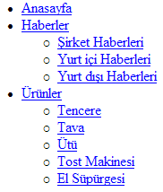

Bir önceki makalede dikey açılır menüleri gördük. Bu makalede yatay açılır menülere bir örnek vereceğiz. Html kodumuz aynı olsun
[sourcecode language="html"] \<ul id="menu" > \<li>\<a href="#">Anasayfa\</a>\</li> \<li>\<a href="#">Haberler\</a> \<ul> \<li>\<a href="#">şžirket Haberleri \</a>\</li> \<li>\<a href="#">Yurt içi Haberleri \</a>\</li> \<li>\<a href="#">Yurt dışı Haberleri\</a>\</li> \</ul> \</li> \<li>\<a href="#">Ürünler\</a> \<ul> \<li>\<a href="#">Tencere\</a>\</li> \<li>\<a href="#">Tava\</a>\</li> \<li>\<a href="#">Ütü\</a>\</li> \<li>\<a href="#">Tost Makinesi \</a>\</li> \<li>\<a href="#">El Süpürgesi \</a>\</li> \</ul> \</li> \</ul> [/sourcecode]

İlk olarak satır başı boşluklarını ve imgeleri kaldıralım. Dikey menüde olduğu gibi.
[sourcecode language="css"] ul#menu, ul#menu ul { list-style: none; margin: 0; padding: 0; } [/sourcecode]
Daha sonra menümüzü yatay hale getirmek için floatözelliğini kullanalım. Normalde bunun için display:inline kodunu da kullanabiliriz.(Bkz. CSS ile Menü Yapmak II - Yatay Menüler) Sonra ilk linkleri göreceli olarak konumlandırmalıyız. Bu konumlandırma aslında ikinci kademe açılacak menüye mutlak konumlandırma yapılması için kullanılır.
[sourcecode language="css"] ul#menu li { float: left; position: relative; width: 150px; } [/sourcecode]
Sonra ikincil linkleri sayfaya ilk açıldığında görünmez(display:none) yapalım. Birincil linklere göre konumlandırmak için postion:absolute özelliği ve top:19px (satır yüksekliği 15px + 2px alttan(sonra ekleyeceğiz) + 2px üstten(sonra ekleyeceğiz)) özelliğini kullanalım.
[sourcecode language="css"] ul#menu li ul { display: none; position: absolute; top: 19px; /* yukseklik 15px + sonradan eklenecek paddingler 4px toplam 19px */ left: 0; } [/sourcecode]
Yalnız burada IE sorun çıkaracaktır. IE ve Opera ikincil menüleri konumlandırmasında sorun çıkarır, bunu engellemek için:
[sourcecode language="css"] ul#menu li > ul { top: auto; left: auto; } [/sourcecode]
Görünümü biraz güzelleştirelim:
[sourcecode language="css"] ul#menu li a { font: bold 11px arial, helvetica, sans-serif; display: block; border-width: 1px; border-style: solid; border-color: #ccc #888 #555 #bbb; margin: 0; padding: 2px 3px; color: #000; background: #efefef; text-decoration: none; } [/sourcecode]
ve rollover hali için:
[sourcecode language="css"] ul#menu li a:hover { color: #a00; background: #fff; } [/sourcecode]
Sonra birincil linklerin üzerine gelince ikincil linklerin görünmesi için:
[sourcecode language="css"] ul#menu li:hover ul { display: block; } [/sourcecode]
Önceki makalede belirttiğimiz gibi bu kod IE'de çalışmayacaktır. IE'de çalışması için aşağıdaki kodları yazmalıyız.
[sourcecode language="javascript"] startList = function() { if (document.all&&document.getElementById) { navRoot = document.getElementById("menu"); for (i=0; i\<navRoot.childNodes.length; i++) { node = navRoot.childNodes[i]; if (node.nodeName=="LI") { node.onmouseover=function() { this.className+=" over"; } node.onmouseout=function() { this.className=this.className.replace(" over", ""); } } } } } window.onload=startList; [/sourcecode]
Ayrıca aşağıdaki kodu da eklemeliyiz.
[sourcecode language="css"] ul#menu li:hover ul, ul#menu li.over ul{ display: block; } [/sourcecode]
Önemli bir not olarak koddaki \<ul id="menu" > ve javascriptteki navRoot = document.getElementById("menu"); aynı olmasına dikkat edelim.
işte sonuç:
şimdiye kadar anlatılan menü kodlarında işin yapısı öğretilmeye çalışılmıştır. Bu kodları kullanarak çok çeşitli menüler yapılabilir, bunu gerek internette arayarak ve gerekse kaynaklar bölümündeki linklere göz atarak görebilirsiniz. Bir çok menü türü bu şekilde tasarlanabilir. alt kademeli, değişik renklerde ve değişik ebatlarda menü yapılabilir.
Örnek kodları indir
Kaynaklar
- http://www.alistapart.com/articles/dropdowns/
- http://www.compassdesigns.net/
- [http://www.tanfa.co.uk/css/examples/menu/tutorial-h.asp#hs6][]
- http://www.cssplay.co.uk/menus/index.html
Comments !